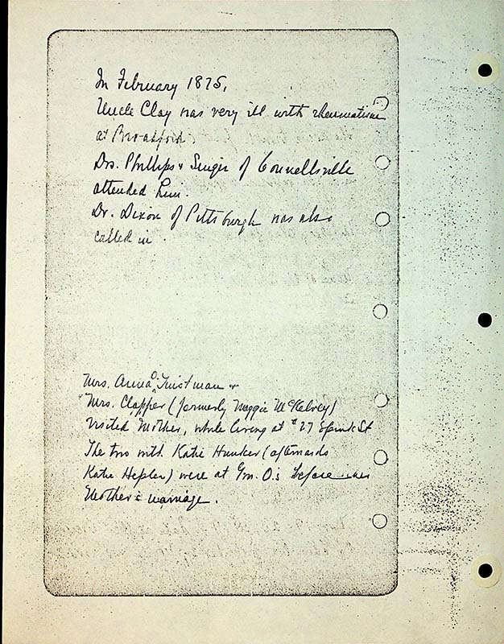

In February 1875
Uncle Clay was very ill with rheumatism at Broadford Drs. Phills and Swizer ????? of Connellsville attended him. Dr. Dixon of Pittsburgh was also called in.
Mrs Anna O.[Overholt] Tinstman & Mrs. Clapper (formerly Maggie McKelvey) visited Mother at #27 Spink St. The two with Katie Hunker (afterwards Katie Hepler) were at Gm O’s [Maria Stauffer Overholt] before Mother's marriage.